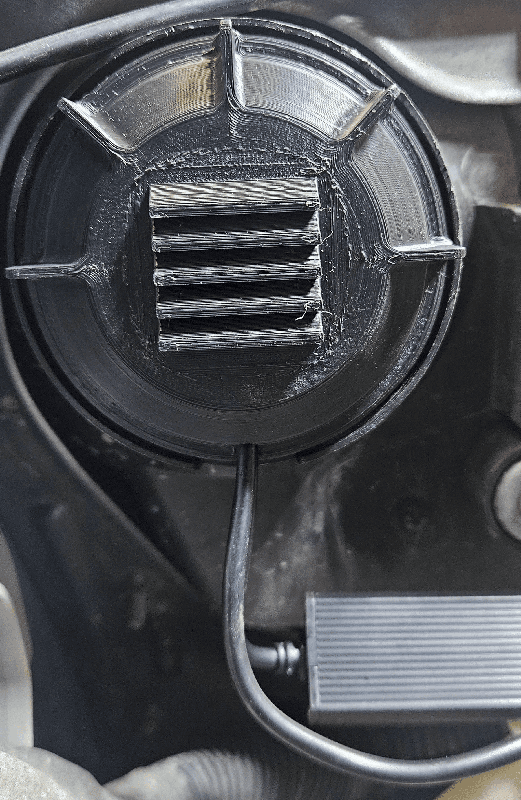
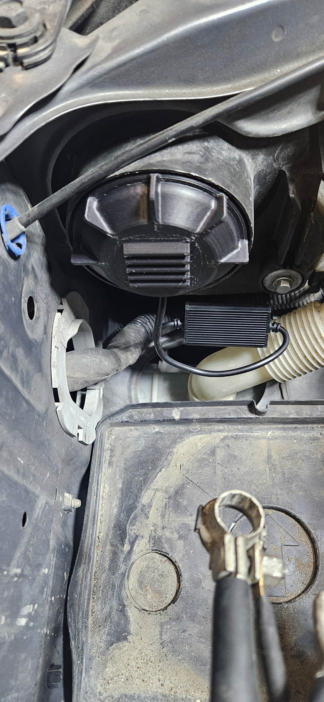
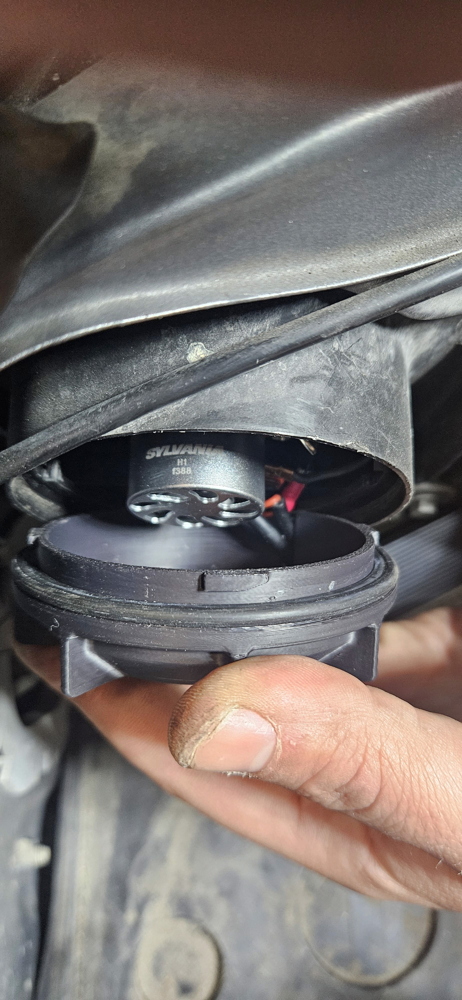

Custom 3D-Printed Headlight Rear Caps for LED Bulbs
Designed to improve airflow and fitment for LED bulbs, featuring louvered vents for cooling and a pass-through slot for the voltage box.
Project Overview:
Upgrading to LED headlight bulbs in my Subaru Forester XT introduced a challenge—stock rear caps didn’t provide enough space for the large cooling fans attached to the LEDs. To ensure proper airflow and accommodate the voltage management box, I designed and 3D-printed custom headlight rear caps that seamlessly integrate with the factory housing while enhancing functionality.
Design and Features:
- Increased Internal Space: The caps are slightly extended to fit the LED cooling fans without interference.
- Ventilation Slots: Designed with louvered vents to allow fresh air in while preventing water intrusion, keeping the bulbs cool and extending their lifespan.
- External Wire Slot: A designated pass-through slot enables the LED voltage management box to be placed outside the headlight housing, as it wouldn't fit inside.
- High-Quality Material: Printed in ASA for superior heat resistance, UV protection, and long-term durability in all weather conditions.
Outcome:
The custom caps fit perfectly, ensuring proper cooling and maintaining the integrity of the headlight housing. The LEDs now operate efficiently with optimal airflow, and the design successfully prevents moisture buildup. This modification highlights the practical applications of 3D printing in solving real-world automotive challenges.
Now Open Source:
The caps are free and open source under CC BY-NC-SA 4.0 — the model, the production print project, the STEP source, and the install guide are all published. The product page has the full details.


